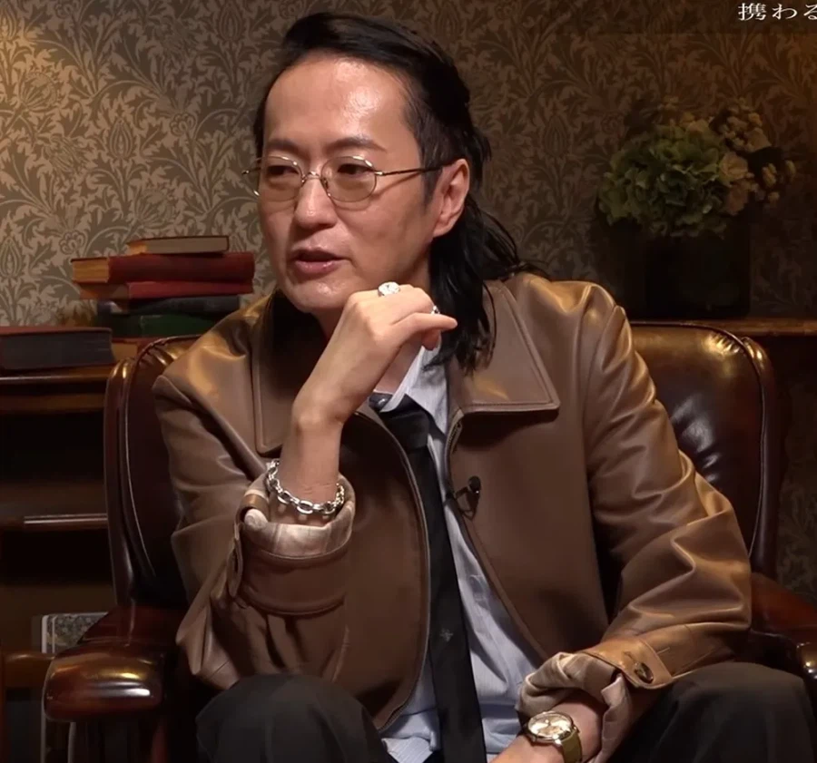
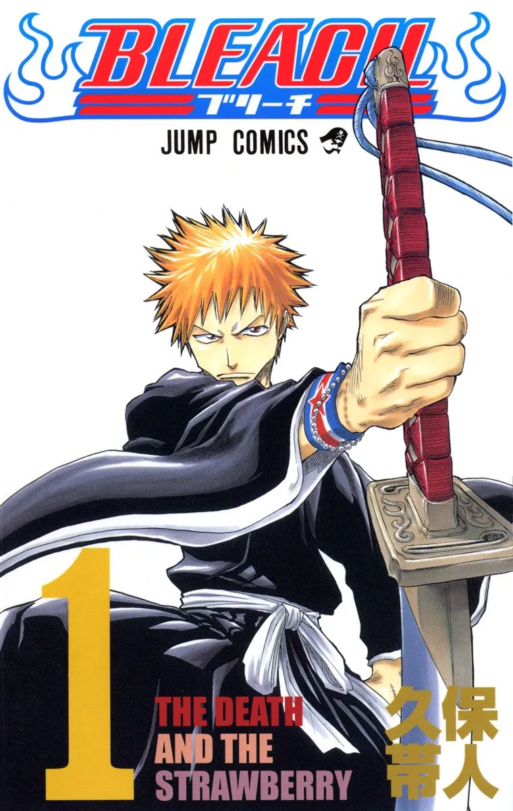

"연재 초기의 나는 모든 만화가들을 뛰어넘어야 할 적으로 생각하고 그들과 친밀한 관계를 유지하지 않으려 했다. 그래서 점프에선 매년 시상식과 함께 점프 작가 파티를 열었는데, 한번도 참여한 적이 없다. 너희(신인 만화가)들은 그렇게 행동하지 마라. 나이가 들고 나니 인맥 쌓기가 얼마나 중요한 것인지 깨달았다. 젊었을 때 사납게 행동하지 않았으면 말년이 좀 더 편했을 거야."
한참 블리치 연재중이던 표독표독 열매 먹은 쿠보는 다른 작가라 친하게 지낸다는건 밑으로 들어가는것(?)이라고 생각해 아무랑도 친하게 안지내고
(본인은 의도하지않았지만) 인터뷰나 트위터에 다른 작가들 공개저격도 여러번했었다
저 쿠보는 가짜 쿠보다 망사 근육 선글라스 쿠보를 석방하라!